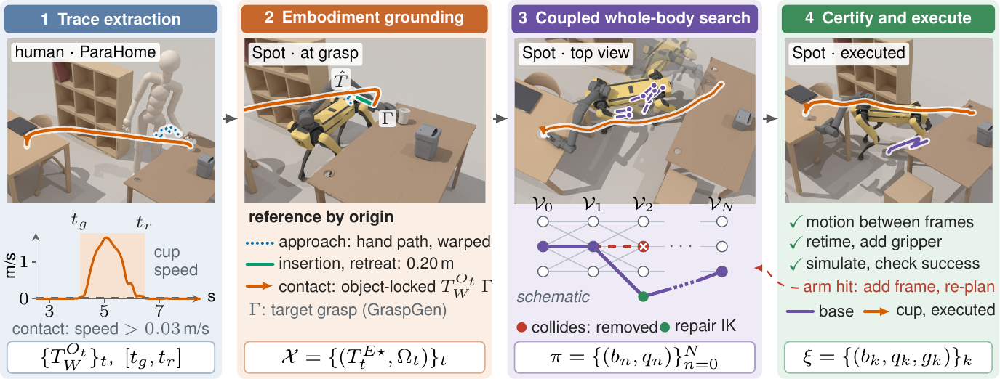
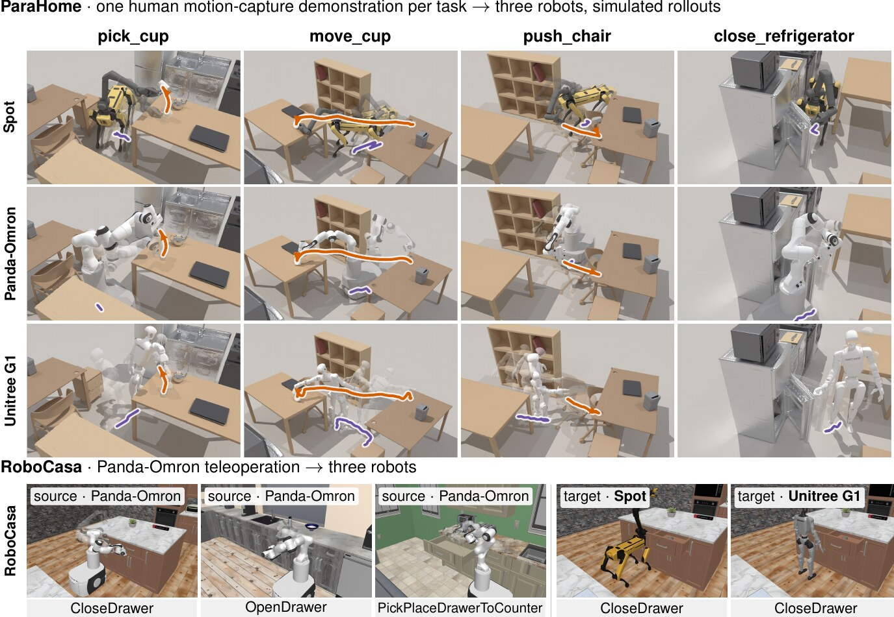

Paper under double-blind review
Automated demonstration synthesis for imitation learning avoids costly data collection, but transferring demonstrations across morphologies often produces trajectories that the target robot cannot execute or that collide with obstacles. Mobile manipulation amplifies these challenges as the planner must coordinate base placement and arm motion simultaneously. We present CroMoGen, a learning-free, planning-based framework that synthesizes mobile manipulation demonstrations from different robot and human sources. CroMoGen formulates synthesis as a constrained optimization problem that combines kinematic feasibility, whole-body collision avoidance, and a trajectory alignment objective that preserves task-relevant object interactions. The approach adapts demonstrated motions to the target morphology and environment. Further, unlike methods that decouple base placement from arm motion, CroMoGen jointly optimizes both for greater adherence to the source demonstration. We evaluate CroMoGen on four mobile manipulation task families in RoboCasa and ParaHome. In the challenging human-to-robot setting, CroMoGen reaches a 56% demonstration-generation success rate, exceeding the strongest baseline by 37 percentage points.
CroMoGen treats a demonstration as a specification of the interaction — which object moves, along which path, and when contact begins and ends — rather than as a limb motion to reproduce. (1) Trace extraction detects contact from its effect on the object: grasp and release are where the object's speed rises above and falls below a threshold. (2) Embodiment grounding replaces the demonstrator's hand with a grasp from the target robot's own screened grasp set and locks it to the demonstrated object trajectory during contact, keeping the free-space hand motion only as a shape prior. (3) Coupled whole-body search picks base poses and arm configurations jointly for the whole segment with an exact layered dynamic program over base cells and inverse-kinematics branches, in which consecutive base poses must be reachable in the time the demonstration allots. (4) Certification and execution verifies arm collisions lazily and repairs them with scene-aware inverse kinematics, certifies base motion between frames as collision-free, and keeps a retimed trajectory only if it completes the task in simulation. No paired source–target demonstrations, joint-level correspondence or learned retargeting policy is needed.

We executed 16 move_cup trajectories, retargeted from human demonstrations, on a physical Spot: eight whose
simulated execution succeeded and eight whose simulated execution failed. Seven of the first group and five of the second
succeeded on the robot. Below are all eight runs of the first group, uncut, including its one failure.
The one run that succeeded in simulation but failed on the robot: the gripper began to close while the hand was still about 0.1 m short of the grasp, and tipped the cup over.
| In simulation | ParaHome move_cup segment · outcome on the robot | On robot | |||||||
|---|---|---|---|---|---|---|---|---|---|
| Succeeded | 20 ✓ | 33 ✓ | 47 ✓ | 62 ✗ | 67 ✓ | 114 ✓ | 117 ✓ | 161 ✓ | 7 / 8 |
| Failed | 2 ✓ | 21 ✗ | 40 ✓ | 49 ✗ | 99 ✓ | 112 ✓ | 118 ✗ | 136 ✓ | 5 / 8 |
Hardware commands come from the same timing policy as in simulation, under hardware-specific motion limits, so the simulated and physical commands are not identical.
The same ParaHome close_refrigerator segment, recorded from a human, retargeted to a wheeled manipulator and to a
legged one. The door is a simulated articulation and closes only through contact. The bar at the bottom of each video marks the
approach (blue), contact (green) and release (orange) phases of the source demonstration.
Human-to-robot transfer uses four household tasks from ParaHome motion capture: pick_cup, move_cup,
push_chair and close_refrigerator. Robot-to-robot transfer uses the RoboCasa tasks
CloseDrawer, OpenDrawer and PickPlaceDrawerToCounter, recorded by human teleoperation of
Panda-Omron and retargeted to Spot and Unitree G1. All methods are compared in the same simulator with the same contact model.

Top: the four ParaHome tasks (columns), each retargeted from one human demonstration to the three robots (rows); every cell is a successful simulated rollout, shown as a time-lapse with the object path (orange) and base path (purple). Bottom: the three RoboCasa source tasks and the target robots in a source scene; these show sources and scenes, not CroMoGen outputs.